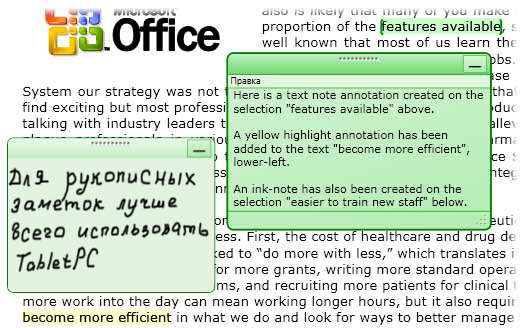
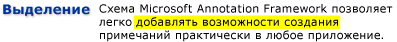
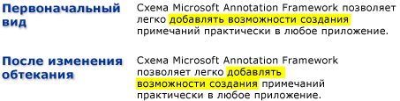

Общие сведения о заметках
Добавление заметок или примечаний на печатные документы — это настолько обыденное действие, что мы воспринимаем его как должное. Такие примечания или комментарии являются "заметками", которые мы добавляем в документ для пометки информации или выделения интересующих элементов, к которым будем обращаться в дальнейшем. Хотя написание заметок на печатных документах является простым и обыденным, возможность добавлять личные примечания в электронные документы, как правило, очень ограниченна, если вообще доступна.
В этом разделе рассматриваются распространенные типы заметок, в частности записки и выделения и показано, как Microsoft Annotations Framework облегчает использование этих типов заметок в приложениях с помощью документов Windows Presentation Foundation (WPF) элементы управления для просмотра. WPF включить элементы управления для просмотра документа, поддерживающие заметки FlowDocumentReader и FlowDocumentScrollViewer, а также, как элементы управления, производного от DocumentViewerBase например DocumentViewer и FlowDocumentPageViewer.
Записки
Обычная записка содержит информацию, написанную на маленьком листке цветной бумаги, который затем "приклеивается" к документу. Цифровые записки предоставляют аналогичные функциональные возможности для электронных документов, однако обеспечивают дополнительную гибкость благодаря включению многих других типов содержимого, например печатного текста, рукописных заметок (например, рукописного ввода Планшетный ПК) или веб-ссылок.
Ниже показаны некоторые примеры заметок: выделение, текстовая записка и рукописная записка.

В следующем примере показан метод, который можно использовать для включения поддержки заметок в приложении.
// ------------------------ StartAnnotations --------------------------
/// <summary>
/// Enables annotations and displays all that are viewable.</summary>
private void StartAnnotations()
{
// If there is no AnnotationService yet, create one.
if (_annotService == null)
// docViewer is a document viewing control named in Window1.xaml.
_annotService = new AnnotationService(docViewer);
// If the AnnotationService is currently enabled, disable it.
if (_annotService.IsEnabled == true)
_annotService.Disable();
// Open a stream to the file for storing annotations.
_annotStream = new FileStream(
_annotStorePath, FileMode.OpenOrCreate, FileAccess.ReadWrite);
// Create an AnnotationStore using the file stream.
_annotStore = new XmlStreamStore(_annotStream);
// Enable the AnnotationService using the new store.
_annotService.Enable(_annotStore);
}// end:StartAnnotations()
Выделение
Люди используют различные способы для привлечения внимания к интересующим элементам в бумажном документе, такие как подчеркивание, выделение, заключение слов в предложении в кружок или рисование пометок и примечаний на полях. Заметки типа "выделение" в Microsoft Annotations Framework предоставляют подобную функцию для информации, отображаемой в элементах управления для просмотра документа WPF.
На следующем рисунке показан пример заметки-выделения.

Пользователи обычно создают заметки, сначала выбирая некоторый текст или интересующий элемент, а затем щелкните правой кнопкой мыши для отображения ContextMenu для параметров заметки. В следующем примере показан XAML можно использовать для объявления ContextMenu с маршрутизированных команд, доступных пользователям для создания заметок и управления ими.
<DocumentViewer.ContextMenu>
<ContextMenu>
<MenuItem Command="ApplicationCommands.Copy" />
<Separator />
<!-- Add a Highlight annotation to a user selection. -->
<MenuItem Command="ann:AnnotationService.CreateHighlightCommand"
Header="Add Highlight" />
<!-- Add a Text Note annotation to a user selection. -->
<MenuItem Command="ann:AnnotationService.CreateTextStickyNoteCommand"
Header="Add Text Note" />
<!-- Add an Ink Note annotation to a user selection. -->
<MenuItem Command="ann:AnnotationService.CreateInkStickyNoteCommand"
Header="Add Ink Note" />
<Separator />
<!-- Remove Highlights from a user selection. -->
<MenuItem Command="ann:AnnotationService.ClearHighlightsCommand"
Header="Remove Highlights" />
<!-- Remove Text Notes and Ink Notes from a user selection. -->
<MenuItem Command="ann:AnnotationService.DeleteStickyNotesCommand"
Header="Remove Notes" />
<!-- Remove Highlights, Text Notes, Ink Notes from a selection. -->
<MenuItem Command="ann:AnnotationService.DeleteAnnotationsCommand"
Header="Remove Highlights & Notes" />
</ContextMenu>
</DocumentViewer.ContextMenu>
Привязка данных
Annotations Framework привязывает заметки к данным, выбранным пользователем, а не только к расположению. Таким образом, при изменении представления документа, например когда пользователь прокручивает его или изменяет размер окна отображения, заметка остается привязанной к выбранным данным. Например, на следующем графике показана заметка, которую пользователь задал для выделенного текста. При изменении представления документа (прокрутка, изменение размера, масштаба и т. д.) заметка-выделение перемещается вместе с исходным фрагментом данных.

Сопоставление заметок с объектами заметок
Можно сопоставить заметки с соответствующими объектами заметок. Например, рассмотрим простое приложение для чтения документа, имеющее панель комментариев. Панель комментариев может быть полем со списком, в котором отображается текст из списка заметок, привязанных к документу. Когда пользователь выбирает элемент в списке, приложение загружает в представление абзац в документе, к которому привязан соответствующий объект заметки.
Ниже приведен пример, демонстрирующий реализацию обработчика событий такого списка, который служит в качестве панели комментариев.
void annotationsListBox_SelectionChanged(object sender, SelectionChangedEventArgs e)
{
Annotation comment = (sender as ListBox).SelectedItem as Annotation;
if (comment != null)
{
// IAnchorInfo info;
// service is an AnnotationService object
// comment is an Annotation object
info = AnnotationHelper.GetAnchorInfo(this.service, comment);
TextAnchor resolvedAnchor = info.ResolvedAnchor as TextAnchor;
TextPointer textPointer = (TextPointer)resolvedAnchor.BoundingStart;
textPointer.Paragraph.BringIntoView();
}
}
Другой пример сценария касается приложений, позволяющих производить обмен заметками и записками между читателями документа по электронной почте. Эта функция позволяет таким приложениям направлять пользователя на страницу, содержащую заметку для обмена.
См. также
- DocumentViewerBase
- DocumentViewer
- FlowDocumentPageViewer
- FlowDocumentScrollViewer
- FlowDocumentReader
- IAnchorInfo
- Схема примечаний
- Общие сведения о ContextMenu
- Общие сведения о системе команд
- Общие сведения о документах нефиксированного формата
- Практическое руководство. Добавление команды в объект MenuItem